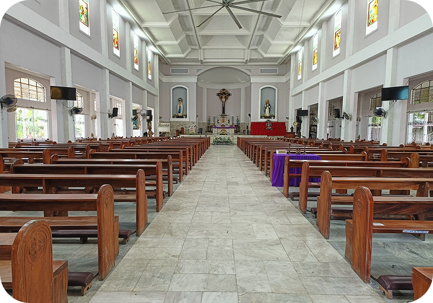
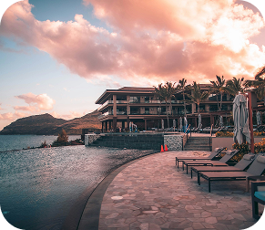

Local Delicacies
Binakol na Manok
Cultural and Historical Sites
St. Peter the Apostle Parish (Ibajay Church)
A Spanish-era church built in the 1800s. Its structure and design reflect the rich Catholic heritage of the town.

- St. Peter the Apostle Parish
- Ati-Atihan Festival
- Ibajay Heritage Museum
- Santo Niño Shrine (Shrine of the Holy Child)
- St. Rita of Cascia Church
Tourist Attractions
#Ibajay, Aklan
Ibajay, Aklan is a serene eco-tourism destination known for its pristine beaches, majestic waterfalls, and one of the oldest mangrove forests in the Philippines.


Katunggan lt Ibajay
Mount Balinsayaw
Jawill Beach
Jawill Falls
Nawidwid Falls
IBAJAY, AKLAN HOTEL
-
Property Type
Your Budget
Price
from
to
Rating

6 Nights - 2 Adults
Municipality of Ibajay

Subscribe to our newsletter for updates about the Municipality of Ibajay, Aklan's events, recommended destinations, new handicrafts, local delicacies, available services, etc.